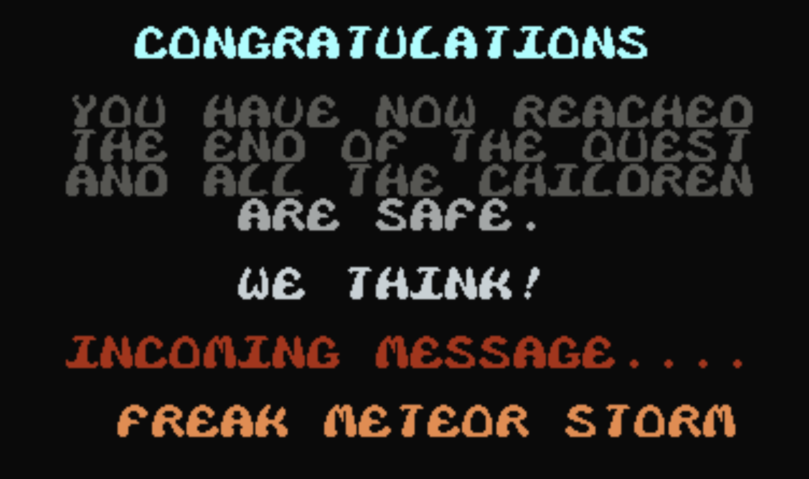

#Icons for everything!
<img src="assets/icons.png">
Icons are a terrific element to add to your work, be it for graphics, lists or just a means of highlighting an important point.
Emojis accomplish this too, but consider the subject matter. Icons are more plentiful, flexible and less likely to affect the visual credibility of your work on a serious topic.
## Here are some great icon resources:
#### * <a href="https://thenounproject.com/">The Noun Project</a> - My favorite site. They have over 2 million royalty-free icons and loads more if you pay a small fee or apply a small credit line.
#### * <a href="https://www.flaticon.com/">Flat Icon</a> - They have full color icons and some nifty options.
#### * <a href="https://www.deviantart.com/search?q=free%20icons">Deviant Art</a> - This artist collective also has some cool custom icons, but they're generally pretty niche.
### Icons are just sizable images. You can load them the same way you would any photo.
Part of your Unit 1 Project is to create a graphic using HTML and CSS. Icons are an excellent way to do this.
### Example
```
<!DOCTYPE html>
<html>
<head>
<meta charset="utf-8">
<meta name="viewport" content="width=device-width">
<title>repl.it</title>
<link href="style.css" rel="stylesheet" type="text/css" />
</head>
<body>
<table>
<tr>
<th> Fruit</th>
<th> Count</th>
</tr>
<tr>
<td>Oranges</td>
<td><div class="inline"><img src="https://static.thenounproject.com/png/1324399-200.png" height="50px" width="50px"><img src="https://static.thenounproject.com/png/1324399-200.png" height="50px" width="50px"><img src="https://static.thenounproject.com/png/1324399-200.png" height="50px" width="50px"></div></td>
</tr>
<tr>
<td;>Apples</td>
<td><div class="inline"><img src="
https://static.thenounproject.com/png/2881655-200.png" height="50px" width="50px"><img src="
https://static.thenounproject.com/png/2881655-200.png" height="50px" width="50px"></div></td>
</tr>
<tr>
<td>Durian</td>
<td><div class="inline"><img src="
https://static.thenounproject.com/png/1325575-200.png" height="50px" width="50px"><img src="
https://static.thenounproject.com/png/1325575-200.png" height="50px" width="50px"><img src="
https://static.thenounproject.com/png/1325575-200.png" height="50px" width="50px"><img src="
https://static.thenounproject.com/png/1325575-200.png" height="50px" width="50px"></div></td>
</tr>
</table>
<script src="script.js"></script>
</body>
</html>
```
### Style
```
table {
text-align: left;
vertical-align: middle;
width:80%;
}
td, th {
vertical-align: middle;
border-bottom: 1px solid #000;
}
.inline {
display:inline;
}
```

#Unit 1 Project
### Due: Oct. 16, 10:00 pm (night before class 7) File here
<br>
<br>
### Create a page using HTML and style it with CSS. You can use edited text/photos from one of your other classes, or do something new. You should have the following elements:
<br>
#### * Headline, text and at least four images that represent some important facet of your story.
#### * Build a graphic using ONLY HTML and CSS.
#### * Use icons in your graphic. Include your name somewhere at the bottom of your graphic.
#### * Use responsive techniques to insure key elements appear functionally on all screens.
#### * You MUST use the design principles we’ve discussed — pay attention to font, alignment, color, etc.
### Exceptional work (A grade) will go beyond simply meeting requirements and implement HTML/CSS into an aesthetically diverse design.
<br>
<br>
#Labtime
## Play around. Screw up. Make ugly things. Make pretty things. Go.
## I am here, please use me.